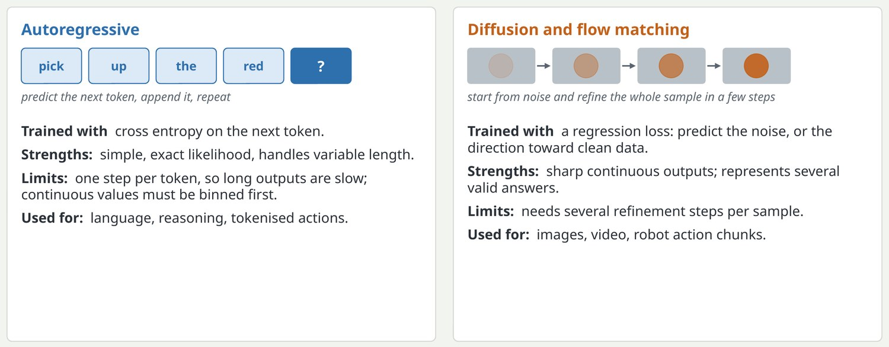
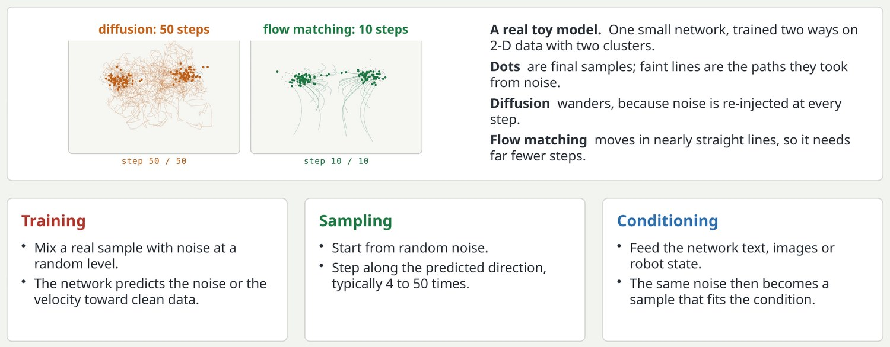
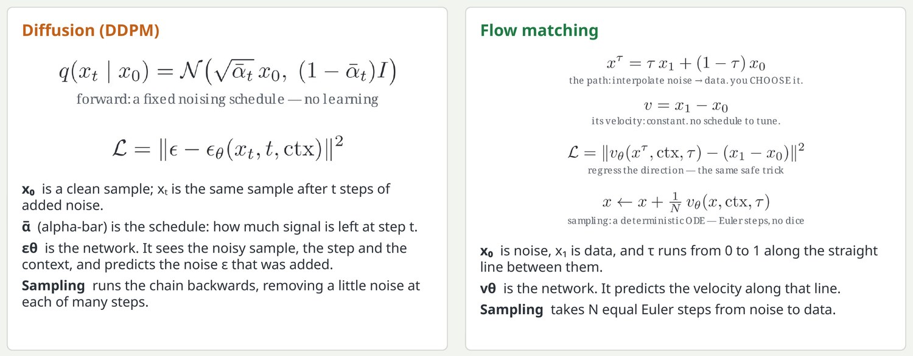
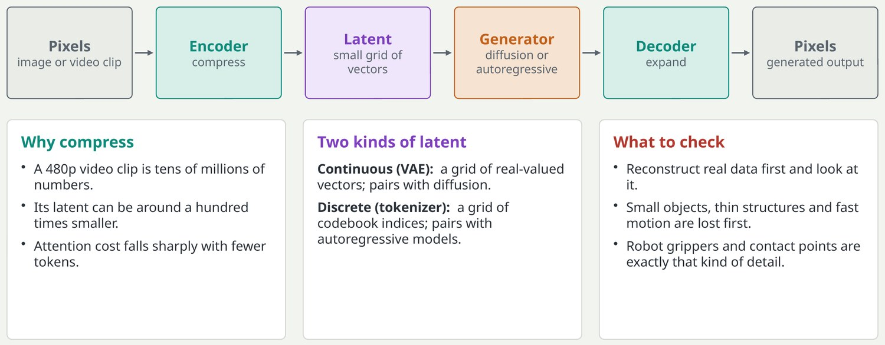
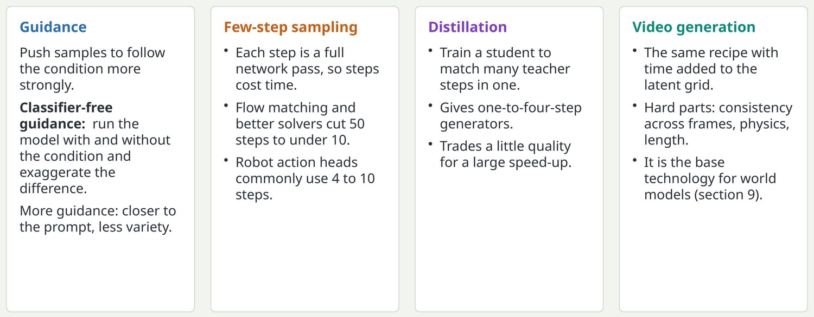

Two ways to generate: piece by piece, or all at once
Generative models learn a data distribution so they can produce new samples from it.

Autoregressive: factor the probability of a sequence into a product of next-token probabilities. Sampling is a loop. Diffusion and flow matching: start from random noise and repeatedly refine the whole sample. Both are used in robotics: action tokens are generated autoregressively, continuous action chunks are generated by diffusion or flow.
Key pointAutoregressive suits discrete sequences; diffusion and flow suit images, video and actions.
Diffusion and flow matching, step by step
Training destroys data with noise; the model learns to undo it.

Training: take a real sample, pick a random noise level, mix the sample with noise, and ask the network to predict the noise or, in flow matching, the velocity that points from noise toward data. Sampling: start from pure noise and take a handful of steps along the predicted direction. Flow matching uses straight-line paths between noise and data, which makes few-step sampling easier; it is the common choice in recent robot policies.
Key pointThe model never sees how to draw a whole sample; it only learns one small denoising step, applied repeatedly.
The two training objectives, written out
Both are plain regression losses; what differs is the path between noise and data.

Diffusion: the first line is the fixed forward process that adds noise; the second is the loss, where the network predicts the noise that was added. Flow matching: choose a straight path between a noise sample and a data sample, note that its velocity is constant, and regress the network onto that velocity. Sampling is a few Euler steps of an ordinary differential equation. The equations are typeset from my flow-matching video.
Key pointFlow matching keeps diffusion's regression trick and removes the noise schedule.
Latent spaces: generate in a compressed world
Pixels are expensive, so modern generators work on a compact code and decode it at the end.

A variational autoencoder, or a learned tokenizer, compresses an image or a video clip by a large factor, for example 8 times in each spatial direction and 4 times in time. The generator, whether diffusion or autoregressive, works on that small grid. This is what makes video generation affordable. If the autoencoder cannot reconstruct small objects such as fingers or text, the generator cannot produce them either.
Key pointThe quality ceiling of a latent generator is set by its autoencoder.
Making sampling controllable and fast
Three techniques that turn a slow research model into something usable.

Guidance is a knob, not a free win: too much makes outputs saturated or unnatural. Step counts are typical ranges, not rules. Distillation here means step distillation, which differs from the model-size distillation in section 13.
Key pointFew-step sampling is what lets diffusion-style models run inside a robot's control loop.